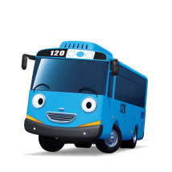

Blue bus boy number 120. The main character of this work is a mischievous person, curious, and lively personality. While wishing to become an adult, he did a hard job for the little bus, touched a machine not to touch, got smaller to the size of a toy, was dragged to Genie's house, and even suffered from driving to the countryside, but during the police experience, he was praised by Rookie and Pat. Its characteristic is that it emits exhaust gas well.